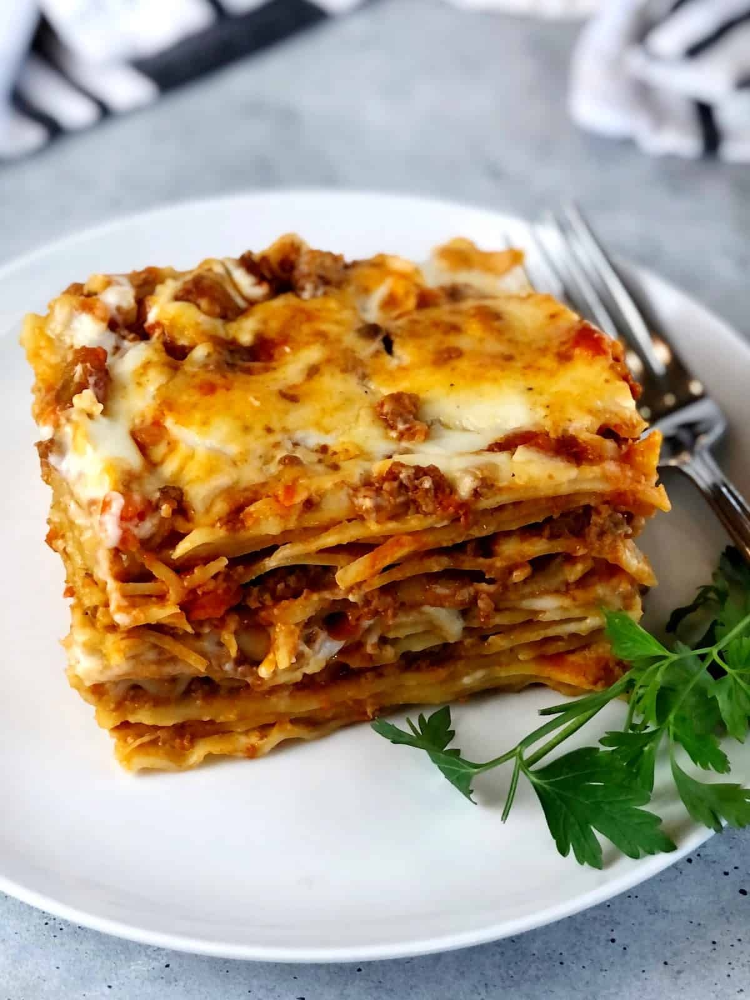

A Lasagna

Everyone loves a good lasagna, right? It's a great way to feed a crowd and a perfect dish to bring to a potluck. It freezes well. It reheats well. Leftovers will keep you happy for days.
Simply Recipes reader Alton Hoover sent me his favorite recipe for lasagna which he has been cooking since his college days. Alton's original recipe created enough lasagna for a small army so I halved it. What is posted here will easily serve eight people.
Ingredients
- Extra virgin olive oil
- Ground beef
- Garliv
- Sauce
- Bell pepper
- Italian seasoning
Preparation
- Put pasta water on to boil:
Put a large pot of salted water (1 tablespoon of salt for every 2 quarts of water) on the stovetop on high heat. It can take a while for a large pot of water to come to a boil (this will be your pasta water), so prepare the sauce in the next steps while the water is heating.
- Brown the ground beef:
In a large skillet heat 2 teaspoons of olive oil on medium-high heat. Add the ground beef and cook until it is lightly browned on all sides.
- Cook the bell pepper, onions, and garlic; add back the beef:
Add the diced bell pepper and onions to the skillet (in the photo we are using yellow bell pepper and red onions).
Cook for 4 to 5 minutes, until the onions are translucent and the peppers softened. Add the minced garlic and cook half a minute more.
- Make the sauce:
Transfer the beef mixture to a medium-sized (3- to 4-quart) pot. Add the crushed tomatoes, tomato sauce, and tomato paste to the pot.